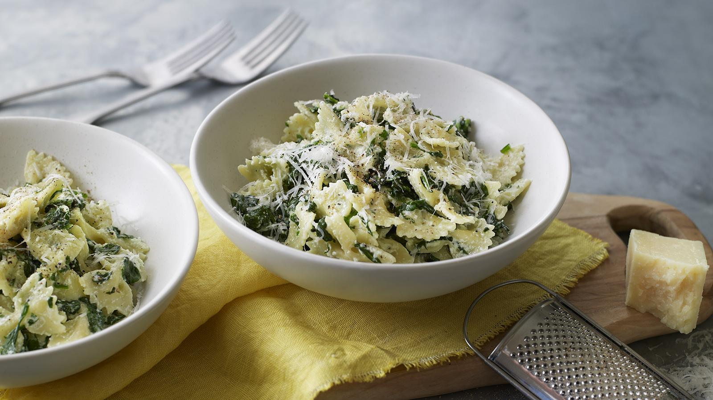

Home
Spinach and Ricotta Pasta

Description
You can make Anna Del Conte's quick and easy spinach and ricotta pasta
sauce in less time than it takes to cook the pasta.
Taken from BBC Food, recipe by Anna Del Conte
Ingredients
- 150g/5½oz dried farfalle or tagliatelle
- 200g/7oz fresh spinach or defrosted frozen spinach
- 50g/1¾oz unsalted butter
- 1 garlic clove, finely chopped
- 125g/4½oz ricotta
- freshly grated nutmeg
- 1 tbsp grated pecorino (or alternative vegetarian hard cheese)
- salt and freshly ground black pepper
Steps
- Cook the pasta according to the packet instructions, or until al
dente. Drain and reserve a cupful of the cooking water.
- If using fresh spinach, cook it with a splash of water in a
saucepan for 1–2 minutes, or until wilted, then leave to cool.
Squeeze all the liquid out of the spinach using your hands and
roughly chop.
- Melt the butter in a large frying pan. Once foaming, add the
spinach, garlic, cooked pasta and a splash of the pasta cooking
water and cook for 2–3 minutes, stirring frequently. Add more of
the cooking water if needed. Add the ricotta and cook gently while
mixing with two forks to break it up.
- Season with the nutmeg, percorino, salt and pepper and serve.